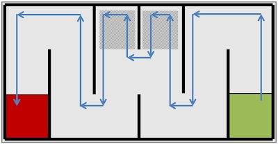

|
Проход робота по лабиринту является одной из классических задач для всякого рода состязаний по робототехнике. Задача сама по себе интересна, тем, что ее базовый алгоритм достаточно прост. Но в тоже время он предоставляет большой простор как для усложнения поведения робота для выхода из сложных лабиринтов, так и, наоборот, для оптимизации поведения робота, для обхода лабиринтов специфичных видов. |

|
Для того, чтобы понять, как запрограммировать робота, для перемещения его по лабиринту, рекомендуется поставить себя на место робота и думать, а как бы вы начали действовать...
Итак, вы оказались в лабиринте...
Нет. На самом деле, если вы робот, собранный на базе Lego Mindstorms, как только вы попали в лабиринт, он будет для вас выглядеть вот так.
Да. Вы ничего не видите. У вас нет глаз. У вас нет стереозрения. Для вас расположение стен лабиринта и уж тем более наличие ответвлений и проходов – загадка. Единственное, что вы, скорее всего, знаете наверняка, что прямо под вами твердая поверхность.
Что вы будете делать в таком случае? Идти вперед выставив руки перед собой? Не плохая идея. А потом что? И вообще, что значит "вперед"? А если это очень большой зал? В таком случае, есть вероятность, что, поскольку вы не видите ориентира, на который могли бы равняться, то вы будете шагать чуть-чуть в сторону. В итоге, прошагав окружность вы вернетесь на тоже место с какого начали, но так и не узнаете, что вернулись в него – так вы будете ходить очень долго.
Наиболее разумной идеей было бы попытаться найти опору в виде стены для какой-либо руки. Допустим, правой. Как только стена обнаружена, вы в вправе двигаться вперед или назад. Стена в таком случае будет являться вашим путеводителем, опорой в этом "темном" мире.
У робота такой рукой могут быть сенсоры расстояния, касания или даже освещенности. Если робот использует сенсор касания, то во время движения в момент, когда стена потеряется, он выдаст сигнал, который будет служить для робота поводом изменить свое поведение. Если используется сенсоры расстояния, то для того, чтобы двигаться вдоль стены, не обязательно приближаться к ней вплотную – достаточно приблизится на какое-нибудь удобное расстояние и во время движения стараться находиться все время на том же расстоянии от стены. В таком случае, резкое изменение расстояния, сигнализирует о том, что роботу нужно совершить существенную корректировку своего курса, например поворот за угол.
Сенсор освещенности может также использоваться роботом в контексте определения расстояния – чем ближе сенсор к стене, тем больше света возвращается (от светлой стены), чем дальше от стены, тем меньше света возвращается.
Итак,как будет выглядеть наше движение?
Когда мы рукой чувствуем стену – мы спокойно движемся. Когда стенаобрывается, значит, лабиринт в этом месте делает поворот. Мы тоже сделаем тогда поворот.
Если все время держать руку на стене и двигаться вперед, в конце концов, произойдет такая ситуация, когда лбом вы стукнитесь об стену – в том месте, где стена справа заканчивается, соединяясь с другой стеной.
Поэтому, чтобы уберечь свой лоб, рекомендуется вторую руку держать перед собой. Для робота второй рукой будет еще один сенсор. Причем, можно использовать как один из тех трех сенсоров, что перечислялись выше – сенсор расстояния, сенсор касания, сенсор освещенности, так и счетчики поворота оси двигателей. Если до столкновения счетчик поворота оси двигателя увеличивался на одну постоянную величину за единицу времени, то после столкновения характер изменений будет другим – за ту же единицу времени прирост будет значительно меньше - при столкновении со стеной-препятствием, двигатели начнут вращаться медленнее.
Ответной реакцией на столкновение со стеной будет поворот к ней боком, после чего уже эта стена будет использована как "опорная" вашей правой рукой. Движение продолжится вдоль нее.
В итоге на текущий момент, получается следующее правило обхода лабиринта: двигаемся прямо, пока под нашей рукой чувствуется стена, как только стенаобрывается поворачиваемся направо, чтобы найти ее и двигаемся снова вдоль стены, если же другой рукой мы ощутили стену спереди, то поворачиваемся налево и используем уже эту стену для движения вдоль нее.
Если продолжить наблюдать за роботом, выполняющим данный алгоритм, то в итоге можно увидеть, что он достигает выхода из лабиринта:
Приведенный выше алгоритм называется "Правилом правой руки" и может быть успешно использован для выхода из всех лабиринтов, которые имеют выход.
Согласно заданию, лабиринт состоит из шести секций, соединенных между собой проходами. Конфигурация проходов заранее неизвестна. Таким образом, одно из возможных конфигураций лабиринта будет выглядеть следующим образом:
Где зеленая секция – место старта робота, а красная секция – место финиша.
Напомним, что идея "Правила правой руки" состоит в том, что роботу все время необходимо двигаться "держась" правой стенки. Обрыв стены означает для робота, поиск ее с правой стороны. Если перед роботом возникает препятствие , то робот выполняет левый поворот, так что препятствие становится по правую сторону и используется роботом к новая "опора", вдоль которой нужно перемещаться.
Как результат, траекторию движения робота в приведенной выше конфигурации лабиритна можно будет отобразить как:
Видно, что траектория движения робота неоптимальна. Так, например, при заходе в области обозначенные штриховкой на рисунке ниже, робот попросту теряет время.

А что если для поиска опоры использовать не правую, а левую руку? Тогда методика обхода лабиринта будет уже называться "Правилом левой руки". В ней все действия будут аналогичны, только направление движения будет меняться: роботу все время необходимо двигаться "держась" левой стенки. Обрыв стены означает для робота, поиск ее с левой стороны. Если перед роботом возникает препятствие , то робот выполняет правый поворот, так что препятствие становится по левую сторону и используется роботом к новая "опора", вдоль которой нужно перемещаться.
Траектория движения в этом же лабиринте изменится:
Очевидно, что "Правило левой руки" дает более оптимальную траекторию – т.е. робот сможет проехать лабиринт за меньшее время. И в первую очередь, в данном конкретном задании, это обуславливается положением старта и финиша в лабиринте.
Хотя и в конкретном приведенном примере было видно, что траектория движения робота, выполняющего "Правило левой руки", - более оптимальна, их этого нельзя сделать вывод, что в каждом лабиринте такой робот будет опережать робота, запрограммированного на движение по "Правилу правой руки".
Например,
1. Робот, двигающийся вдоль правых стенок – выполняет меньше ненужных обходов, т.е. придет к финишу быстрее. Общая длина ненужных обходов для него 1 ячейка, в то время как роботу, двигающемуся вдоль левых стенок – нужно сделать ненужных проходов длиной в 3 ячейки (одна в четвертом коридоре и две в пятом).

2. На этом поле, робот, движущийся по "Правилу левой руки", придет к финишу раньше. 2 ячейки против 4-х.
3. В данной конфигурации количество "лишних" заходов у обоих роботов – одинаково (по 2 ячейки).
Эти три примера показывают, что для разных конфигураций лабиринтов эффективными будут разные алгоритмы. Но это нерепрезентативная выборка.
Если провести анализ всех возможных комбинаций установленных перегородок, то получатся следующие результаты.
|
Всего различных возможных вариантов установки перегородок |
243 |
|
"Разумных" вариантов, когда не никакие три сподряд идущие перегородки не будут установлены в одинковые позиции
|
180 |
Если теперь рассмотреть варианты прохода для каждой конфигурации лабиринта, то получится такая вот статистика:
Где
- в первой строчке – идеальные конфигурации – робот не сделает ни одного ненужного заворота.
- остальных строчки для проходов с одним или несколькими "ненужными" заворотами в тупики. Причем, если написано два «ненужных» прохода, то это может быть заворот в один длинный тупик или два коротких – в любом случае, на их проходы тратиться почти одинаковое время.
- в последней строчке – сколько "ячеек" придется посетить при самой неудачной конфигурации лабиринта.
Из таблицы видно, что в 45 конфигурациях лабиринта из 180 робот, обходящий алгоритм по "Правилу левой руки", будет делать только верные перемещения. В то время как роботу, выполняющий программу по "Правилу правой руки" доступно только 13 таких конфигураций. Даже на то, что роботу выпадет конфигурация в которой ему придется сделать все го лишь два "ненужных" прохода., вероятность больше в случае "Правила левой руки" - 41 к 180, тогда как у "Правила правой руки" - всего 36 к 180.
Следовательно, можно сделать вывод, что у робота, двигающегося вдоль левых стенок, вероятность прийти к финишу первым выше. Т.е. при выборе, какой именно алгоритм реализовывать у робота, выбор, безусловно, ложиться на "Правило левой руки".
Причем, если вспомнить о необходимости собирать шарики по пути движения робота (а они лежать в строго определенных позициях в 3-ем, 4-ом и 5-ом коридорах), статистика несильноизменится.
Допустим, вы сделали достаточно умного робота, способного определять что он находися в нужном коридоре и ему нужно сделать лишний заворот для захвата шарика, даже если "верный" ход для движения к финишу находится не в этом направлении.

Назовем этот маневр также "ненужным" ходом, тогда табличка станет выглядеть следующим образом:
Т.е. варианты попасть на "хорошее" поле у робота, работающего по "Правилу левой руки" все еще существенно выше.
Из-за специфичного расположения зон старта финиша, этот способ дает меньше "ненужных" заходов в тупиковые коридоры.
Но поскольку для пободы в состязании робот должен выполнить задание как можно быстрее, заход в тупиковые коридоры крайне не желателен. Перемещение по таким коридорам не приближает робота к финишу, и робот попросту тратит в них драгоценные секунды.
Очевидно, что для того, чтобы робот определял более оптимальный маршрут, в базовую программу перемещения робота нужно добавить интеллекта. Скорее всего, это также потребует конструктивных изменений робота.
Напомним, что в конструкции всех роботов, двигающихся по "Правилу левой руки", будет одинаковый элемент: сенсор расстояния/освещенности/касания будет направлен влево.
Рассмотрим, одну из возможных трасс, где заштрихованными отображаются те коридоры , в которых робот будет терять время, в случае, если он просто следует "Правилу левой руки".
Давайте подумаем, как можно избежать заездов в заштриховнные области?
Первый заезд в тупик возникает в тех случаях, когда робот выезжает из срединного проезда и не знает, в каком месте будет находится следующий проезд. Для нас же, сторонних наблюдателей, очевидно, что роботу бы неплохо посмотреть с какой стороны от него находится стенка и сразу двигаться в ту сторону, где стенки нет.
Один из возможных вариантов – не закреплять сенсор расстояния жестко с левой стороны, а прикрепить его к двигателю. Еще вариант – не только сделать сенсор вращающимся, но и добавить еще один. В обоих случаях, при определенном положении робота и сенсора, у него возникает возможность "увидеть", что его ждет в каждом из ответвлений – со стороны, где стенки нет, сенсор будет показывать большее расстояние.
Если робот обнаружил такую ситуацию, он сразу же корректирует свой курс, и, таким образом, избегает "ненужного" поворота.
Такая же конструкция позволит оптимизировать траектория движения и для тупика второго вида.
При всей простоте, этот метод для выполнения данной конкретно оптимизации, возможно, у вас не заработает. Причин несколько – погрешности измерений сенсора , помехи от других стен, слишком большой угол расположения сенсора, относительно стены, от которой должен отразиться сигнал и т.п.
Тогда решением может оказаться, автоматическое изменение конфигурации сенсоров при движени вдоль стены. Сенсоры из расположения "углом" начинают просто смотреть в разные стороны:
Как видно, "свободный проход" в таком случае определяется достаточно просто. В то время как один сенсор работает на движение по "Правилу левой руки", второй просто сообщает роботу, что заметил проход, после чего робот корректирует свое поведение.
Если и дальше рассматривать всевозможные переходы из одного коридора в другой в лабиринте такого типа, то выяснится, что предлагаемых изменений в конструкции робота будет достаточно для того, чтобы робот оптимизировал траекторию своего перемещения.
Итак, сперва следует напомнить, какие же основные блоки определяют поведение робота в лабиринте:
- Движение прямо с опросом датчиков, обнаруживающих проход справа, и датчиков, обнаруживающих столкновение с преградой
- Поворот направо, в случае обнаружения прохода
- Поворот налево, в случае обнаружения препятствия
В общем случае обычное движение прямо - не самый сложный элемент в программе. Теми нюансами, которые появляются в ходе такого движения, на первых порах можно пренебречь, сфокусировавшись на других основных элементах алгоритма - выполнении поворотов.
Здесь следует ненадолго остановиться и опять вернуться к рассмотрению конструкции робота.
Первый случай - поворот направо. Подразумевается, что он происходит после срабатывания датчика смотрящего в сторону.
После такой остановки, робот может выполнить два возможных поворота: либо поворот одним колесом, либо поворот вокруг своей оси.
Видно, что после такого поворота, дальнейшее движение робота прямо приведет к столкновению со стеной. Эту проблему можно решить двумя способами:
- сдвинув датчик назад
- или просто переместив робота после обнаружения прохода, но до выполнения поворота чуть-чуть вперед.
Для того, чтобы закончить поворот до конца, роботу будет необходимо сдвинуться вперед, так чтобы датчик оказался вновь направлен на то место, где должна быть стена. Не имеет большого смысла делать этот действие с условием выхода "пока не увижу стену", потому что в общем случае, стены может и не быть - перегородка, отделяющая две секции лабиринта, может оказаться слишком тонкой для определения датчиком. Остановка должна произойти примерно на таком же расстоянии, на котором бы робот сам остановился, обнаружив проход.
Теперь следует рассмотреть с таких же позиций разворот налево.
Очевидно, что для выполнения поворота роботу нужно достаточно места. И тут опять несколько способов обеспечения этого:
- обнаруживать препятствие заранее
- или расположить ведущие колеса тележки так, чтобы они были самой крайней задней точкой робота. Тогда робот сможет сделать разворот назад вместо того, чтобы упираться в стену при повороте вперед.
Из схемы становиться понятно, почему при таком способе расположения колес надо стараться минимизировать проекцию робота на пол: здесь следует рассматривать вертикальное расположение и блока и колес. Иначе после разворота датчик, отслеживающий проход будет располагаться слишком далеко от стены, что может приводить к ложным срабатываниям - он будет думать, что увидел проход.
Идеальной будет комбинация обеих вариантов - это позволит роботу двигаться достаточно близко к стене и иметь возможность заранее выполнять повороты в случае обнаружения препятствия.
Что ж, с конструкцией более-менее стало понятно, с тем как выполнять развороты тоже. В идеале, после таких экспериментов должны остаться два готовых набора блоков, которые можно будет впоследствии вставлять в основную программу. Имеет смысл занести эти куски программы в собственные блоки.
Структура основной программы однозначно диктуется правилом правой руки:
Алгоритм начинает свое выполнение с движение вперед. Как уже говорилось, в общем случае, это может быть обычное движение.
Затем, друг за другом идет проверка на обнаружение прохода в правой стене, либо на обнаружение столкновения с препятствием. И, в зависимости от того, какая проверка сработала, вызываются блоки поворотов. Если никакая проверка не сработала в этот момент времени, то в следующий момент времени нужно сделать еще одну проверку, а потом еще и еще.
Очевидно, что после выполнения поворотов нужно опять продолжить движение вперед, и опять перейти к проверкам на проход или препятствие.
Такой алгоритм обладает недостатком: его сложно реализовывать на языке NXT-G (да и на других языках тоже), поскольку он имеет две точки возврата после выполнения одних и тех же повторяющихся действий. К тому же, единожды включив двигатели на движение вперед после старта или после поворотов, этот алгоритм не подразумевает попытку подправить свое движение, если возникнет необходимость для перемещения ровно вдоль стены. Логично было бы все время выполнять периодическую корректировку или просто добиться упрощения алгоритма, принимая во внимание, что команды "включить мотор" не блокируют дальнейшую работу алгоритма, а передают управление следующим инструкциям.
В итоге, программа на языке NXT-G будет похожа на подобную конструкцию:
Как уже говорилось, блок движение вперед может быть замещено специальным блоком, который бы обеспечивал перемещение вдоль стены. Хотя во многих случаях эта проблема может быть решена чисто механически: у робота с нужно стороны устанавливаются ролики или направляющие, которые не позволяют ему слишком приблизиться к стене.